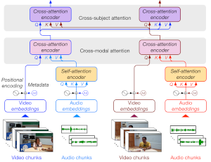
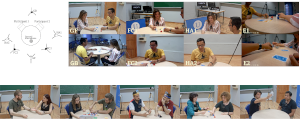
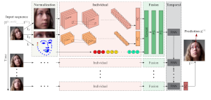
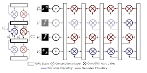

Publications | |
|  | (ICCV 2021 - DYAD Workshop) Dyadformer: A Multi-modal Transformer for Long-Range Modeling of Dyadic Interactions
David Curto*, Albert Clapés*, Javier Selva*, Sorina Smeureanu, Julio C. S. Jacques Junior, David Gallardo-Pujol, Georgina Guilera, David Leiva, Thomas B. Moeslund, Sergio Escalera and Cristina Palmero
We present the Dyadformer, a novel multi-modal multi-subject Transformer architecture to model individual and interpersonal features in dyadic interactions using variable time windows, thus allowing the capture of long-term interdependencies. Our proposed cross-subject layer allows the network to explicitly model interactions among subjects through attentional operations. This proof-of-concept approach shows how multi-modality and joint modeling of both interactants for longer periods of time helps to predict individual attributes.
[PDF][arXiv]
[Bibtex]
@InProceedings{Curto_2021_ICCV,
author = {Curto, David and Clapes, Albert and Selva, Javier and Smeureanu, Sorina and Junior, Julio C. S. Jacques and Gallardo-Pujol, David and Guilera, Georgina and Leiva, David and Moeslund, Thomas B. and Escalera, Sergio and Palmero, Cristina},
title = {Dyadformer: A Multi-Modal Transformer for Long-Range Modeling of Dyadic Interactions},
booktitle = {Proceedings of the IEEE/CVF International Conference on Computer Vision (ICCV) Workshops},
month = {October},
year = {2021},
pages = {2177-2188}
}
|
|  | (WACV 2021 - HBU Workshop) Context-Aware Personality Inference in Dyadic Scenarios: Introducing the UDIVA Dataset
Cristina Palmero∗, Javier Selva∗, Sorina Smeureanu∗, Julio C. S. Jacques Junior, Albert Clapés, Alexa Moseguí, Zejian Zhang, David Gallardo-Pujol, Georgina Guilera, David Leiva and Sergio Escalera
This paper introduces UDIVA, a new non-acted dataset of face-to-face dyadic interactions, where interlocutors perform competitive and collaborative tasks with different behavior elicitation and cognitive workload. The dataset consists of 90.5 hours of dyadic interactions among 147 participants distributed in 188 sessions, recorded using multiple audiovisual and physiological sensors. Currently, it includes sociodemographic, self- and peer-reported personality, internal state, and relationship profiling from participants.
[PDF] [arXiv] [Website]
[Bibtex]
@inproceedings{palmero2021context,
title={Context-Aware Personality Inference in Dyadic Scenarios: Introducing the UDIVA Dataset},
author={Palmero, Cristina and Selva, Javier and Smeureanu, Sorina and Junior, Julio CS Jacques and Clap{\'e}s, Albert and Mosegu{\'\i}, Alexa and Zhang, Zejian and Gallardo-Pujol, David and Guilera, Georgina and Leiva, David and Escalera, Sergio},
booktitle={2021 IEEE Winter Conference on Applications of Computer Vision Workshops (WACVW)},
pages={1--12},
year={2021},
organization={IEEE}
}
|
|  | (BMVC 2018) Recurrent CNN for 3D Gaze Estimation using Appearance and Shape Cues
Cristina Palmero, Javier Selva, Mohammad Ali Bagheri and Sergio Escalera
In this paper, we tackle the problem of person- and head pose-independent 3D gaze estimation from remote cameras, using a multi-modal recurrent convolutional neural network (CNN). We propose to combine face, eyes region, and face landmarks as individual streams in a CNN to estimate gaze in still images. Then, we exploit the dynamic nature of gaze by feeding the learned features of all the frames in a sequence to a many-to-one recurrent module that predicts the 3D gaze vector of the last frame.
[PDF] [arXiv] [Code]
[Bibtex]
@inproceedings{palmero2018recurrent,
title={Recurrent CNN for 3D Gaze Estimation using Appearance and Shape Cues},
author={Palmero, Cristina and Selva, Javier and Bagheri, Mohammad Ali and Escalera, Sergio},
booktitle={Proceedings of the British Machine Vision Conference (BMVC)},
year={2018}
}
|
|  | (ECCV 2018) Folded Recurrent Neural Networks for Future Video Prediction
Marc Oliu, Javier Selva, and Sergio Escalera
This work introduces double-mapping Gated Recurrent Units (dGRU), an extension of standard GRUs where the input is considered as a recurrent state. An extra set of logic gates is added to update the input given the output. Stacking multiple such layers results in a recurrent auto-encoder: the operators updating the outputs comprise the encoder, while the ones updating the inputs form the decoder. Since the states are shared between corresponding encoder and decoder layers, the representation is stratified during learning: some information is not passed to the next layers.
[PDF] [arXiv] [Code]
[Bibtex]
@inproceedings{oliu2018folded,
title={Folded recurrent neural networks for future video prediction},
author={Oliu, Marc and Selva, Javier and Escalera, Sergio},
booktitle={Proceedings of the European Conference on Computer Vision (ECCV)},
pages={716--731},
year={2018}
}
|
| Lecture | Slides |